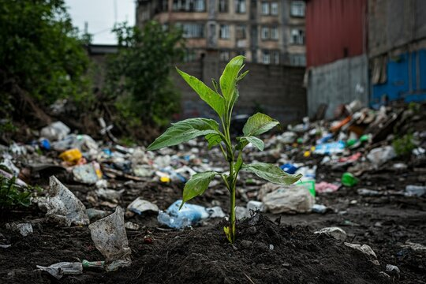

What is Soil Pollution?Soil pollution occurs when hazardous chemicals, waste materials, and pollutants degrade the quality of the soil. This contamination makes the soil unfit for agriculture, disrupts ecosystems, and poses risks to biodiversity. The primary sources of soil pollution include human activities such as deforestation, industrial waste disposal, and overuse of agrochemicals. Addressing soil pollution is essential for ensuring food security and protecting the environment. |
 |
| Causes |
|
| Effects |
|